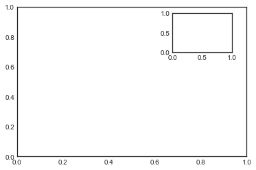
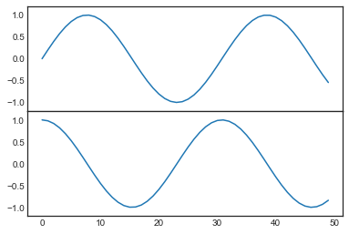
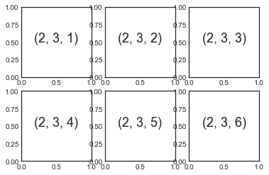
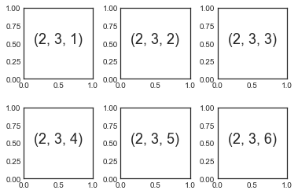
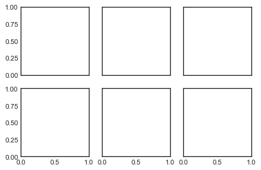
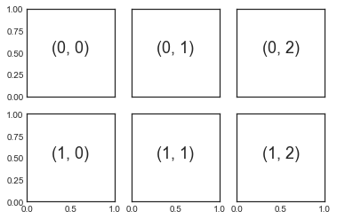
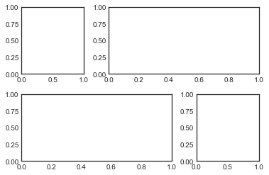
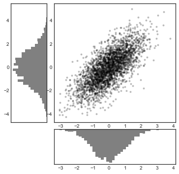

%matplotlib inline
import matplotlib.pyplot as plt
plt.style.use('seaborn-white')
import numpy as npMultiple Subplots
Sometimes it is helpful to compare different views of data side by side. To this end, Matplotlib has the concept of subplots: groups of smaller axes that can exist together within a single figure. These subplots might be insets, grids of plots, or other more complicated layouts. In this chapter we’ll explore four routines for creating subplots in Matplotlib. We’ll start by importing the packages we will use:
plt.axes: Subplots by Hand
The most basic method of creating an axes is to use the plt.axes function. As we’ve seen previously, by default this creates a standard axes object that fills the entire figure. plt.axes also takes an optional argument that is a list of four numbers in the figure coordinate system ([left, bottom, width, height]), which ranges from 0 at the bottom left of the figure to 1 at the top right of the figure.
For example, we might create an inset axes at the top-right corner of another axes by setting the x and y position to 0.65 (that is, starting at 65% of the width and 65% of the height of the figure) and the x and y extents to 0.2 (that is, the size of the axes is 20% of the width and 20% of the height of the figure). The following figure shows the result:
ax1 = plt.axes() # standard axes
ax2 = plt.axes([0.65, 0.65, 0.2, 0.2])
The equivalent of this command within the object-oriented interface is fig.add_axes. Let’s use this to create two vertically stacked axes, as seen in the following figure:
fig = plt.figure()
ax1 = fig.add_axes([0.1, 0.5, 0.8, 0.4],
xticklabels=[], ylim=(-1.2, 1.2))
ax2 = fig.add_axes([0.1, 0.1, 0.8, 0.4],
ylim=(-1.2, 1.2))
x = np.linspace(0, 10)
ax1.plot(np.sin(x))
ax2.plot(np.cos(x));
We now have two axes (the top with no tick labels) that are just touching: the bottom of the upper panel (at position 0.5) matches the top of the lower panel (at position 0.1 + 0.4).
plt.subplot: Simple Grids of Subplots
Aligned columns or rows of subplots are a common enough need that Matplotlib has several convenience routines that make them easy to create. The lowest level of these is plt.subplot, which creates a single subplot within a grid. As you can see, this command takes three integer arguments—the number of rows, the number of columns, and the index of the plot to be created in this scheme, which runs from the upper left to the bottom right (see the following figure):
for i in range(1, 7):
plt.subplot(2, 3, i)
plt.text(0.5, 0.5, str((2, 3, i)),
fontsize=18, ha='center')
The command plt.subplots_adjust can be used to adjust the spacing between these plots. The following code uses the equivalent object-oriented command, fig.add_subplot; the following figure shows the result:
fig = plt.figure()
fig.subplots_adjust(hspace=0.4, wspace=0.4)
for i in range(1, 7):
ax = fig.add_subplot(2, 3, i)
ax.text(0.5, 0.5, str((2, 3, i)),
fontsize=18, ha='center')
Here we’ve used the hspace and wspace arguments of plt.subplots_adjust, which specify the spacing along the height and width of the figure, in units of the subplot size (in this case, the space is 40% of the subplot width and height).
plt.subplots: The Whole Grid in One Go
The approach just described quickly becomes tedious when creating a large grid of subplots, especially if you’d like to hide the x- and y-axis labels on the inner plots. For this purpose, plt.subplots is the easier tool to use (note the s at the end of subplots). Rather than creating a single subplot, this function creates a full grid of subplots in a single line, returning them in a NumPy array. The arguments are the number of rows and number of columns, along with optional keywords sharex and sharey, which allow you to specify the relationships between different axes.
Let’s create a \(2 \times 3\) grid of subplots, where all axes in the same row share their y-axis scale, and all axes in the same column share their x-axis scale (see the following figure):
fig, ax = plt.subplots(2, 3, sharex='col', sharey='row')
By specifying sharex and sharey, we’ve automatically removed inner labels on the grid to make the plot cleaner. The resulting grid of axes instances is returned within a NumPy array, allowing for convenient specification of the desired axes using standard array indexing notation (see the following figure):
# axes are in a two-dimensional array, indexed by [row, col]
for i in range(2):
for j in range(3):
ax[i, j].text(0.5, 0.5, str((i, j)),
fontsize=18, ha='center')
fig
In comparison to plt.subplot, plt.subplots is more consistent with Python’s conventional zero-based indexing, whereas plt.subplot uses MATLAB-style one-based indexing.
plt.GridSpec: More Complicated Arrangements
To go beyond a regular grid to subplots that span multiple rows and columns, plt.GridSpec is the best tool. plt.GridSpec does not create a plot by itself; it is rather a convenient interface that is recognized by the plt.subplot command. For example, a GridSpec for a grid of two rows and three columns with some specified width and height space looks like this:
grid = plt.GridSpec(2, 3, wspace=0.4, hspace=0.3)From this we can specify subplot locations and extents using the familiar Python slicing syntax (see the following figure):
plt.subplot(grid[0, 0])
plt.subplot(grid[0, 1:])
plt.subplot(grid[1, :2])
plt.subplot(grid[1, 2]);
This type of flexible grid alignment has a wide range of uses. I most often use it when creating multiaxes histogram plots like the ones shown in the following figure:
# Create some normally distributed data
mean = [0, 0]
cov = [[1, 1], [1, 2]]
rng = np.random.default_rng(1701)
x, y = rng.multivariate_normal(mean, cov, 3000).T
# Set up the axes with GridSpec
fig = plt.figure(figsize=(6, 6))
grid = plt.GridSpec(4, 4, hspace=0.2, wspace=0.2)
main_ax = fig.add_subplot(grid[:-1, 1:])
y_hist = fig.add_subplot(grid[:-1, 0], xticklabels=[], sharey=main_ax)
x_hist = fig.add_subplot(grid[-1, 1:], yticklabels=[], sharex=main_ax)
# Scatter points on the main axes
main_ax.plot(x, y, 'ok', markersize=3, alpha=0.2)
# Histogram on the attached axes
x_hist.hist(x, 40, histtype='stepfilled',
orientation='vertical', color='gray')
x_hist.invert_yaxis()
y_hist.hist(y, 40, histtype='stepfilled',
orientation='horizontal', color='gray')
y_hist.invert_xaxis()
This type of distribution plotted alongside its margins is common enough that it has its own plotting API in the Seaborn package; see Visualization With Seaborn for more details.